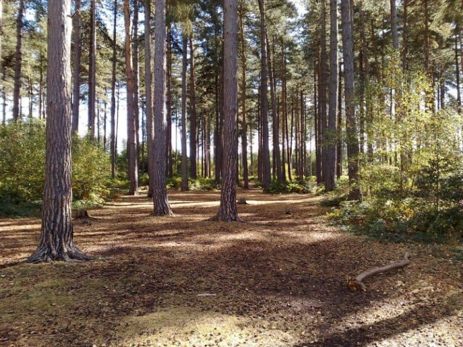

PONTOS CINEMATOGRÁFICOS
Game of Thrones

Museu
Aberto
Plaza de Toros – Osuna (Arena de Meereen)
Osuna é um município da Espanha na província de Sevilha. E, em Game of Thrones, a Plaza de Toros da cidade se transformou na Arena de Meereen, que aparece no final da 5ª temporada.